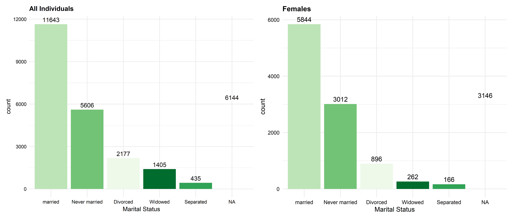

Analysing Household Census Data
1 Introduction
This is an analysis of a modified snapshot of data collected during a household census conducted in England in 2021.
1.1 Summary Statistics:
An overview of our data reveals that a total of 10,565 unique household were captured in this snapshot with household ID (115231) having the highest number (16) of persons living in a household. About 48% (13,326) of individuals are Female while 62% identified as not female. The Mean Age of individuals in our data is approximately 36 years, with an average annual income of £27766. In terms of ethnic distribution 69% of respondents are White, about 13% are Asians, 12% are black, while about 6% are either Hispanic or other ethnic groups. 87% of the people in this data also have rooms in the accommodation that includes a kitchen, bathroom and toilet, behind a door that only the household uses.
2 Exploratory Data Analysis
To develop further understanding of this snapshot censor data set, a series of investigation will be carried out through a series of questions to form our EDA process
2.1 1. Age:
- What is the age distribution of individuals in our data? An interesting observation from the graph below shows that respondents with observations recorded as ’Not Applicable’ are between age 0 to about 13years. This tells us that children and teenagers were also included in the census taken. Also, valuable to note that metrics such as their annual income, marital status would not apply to these age group. For this purpose, we can clearly keep in mind that where they appears in our graphs it’s in reference to children or teenagers. Marital status also strongly correlates with age, there is a wide age range for married individuals about mid 20s to 70+. Most never married individuals are younger. For those who are Widowed result shows most of them are are at older phase of their years around 65-80 years.
2.2 2. Marital Status:
- What is the total count of marital status across the different categories? There is an equal distribution (50%) between the entire population and those who identified as females. Among those who have never been married 54% of them are female. 71% of those divorced identified as not female. Marital status is also not applicable 22.4% of individuals in this data snapshot.

2.3 3. Education
- What is the relationship between education and annual income? From the chat below we see a positive relationship between education and annual income. Individuals with a Masters degree or higher earn more than people with a bachelors degree. This variation in earnings also exists across all levels of education. Another interesting insights in our snapshot is that Females earned significantly higher than those who were not females. A wide variation also exits as they seem to further their education more than the other group.

2.4 4. Ethnicity
- The chat below also shows a positive relationship between education and income across all ethnic groups and also highlights income disparities within ethic groups. White and Hispanic individuals have the highest income averages across most education categories especially those with masters and higher earning significantly higher than their counterpart in other groups.

2.5 5. Age, Income and Marital Status:
- On inspecting the graph below suggests that income and age both vary by marital status. Generally married and widowed people are older and have higher income while those never married individuals are younger with lower incomes. There are also outliers in the never married group with some older individuals above 50 years who have never been married as at the time this census was taken.

3 Conclusion
This analysis investigated several variables in the data set, focusing particularly on the relationship between education, Income and marital status. The results show that individuals with higher levels of education tend to earn significantly more than those with lower qualifications.
Particularly in this data, Females attained higher educational levels than the other gender. And because our results also revealed that individuals with masters level or higher earned more, it can be inferred that females earned significantly higher than the other group.
Disparities exits across ethic groups with individuals from White and Hispanic background earning more on average than other groups. These differences highlights inequality in income distribution suggesting a need for interventions to promote a fair economic outcomes across workplace settings.
Finally, the relationship between all three variables reveals that married and widowed individuals are typically older and have higher average incomes. This could be due to various factors not covered by this data such as years of working experience. An assumption would be that because they are older, they have more experience and attained managerial or senior roles. While those individuals who have never been married are younger, although there are significant outlines in this group, they tend to earn less.